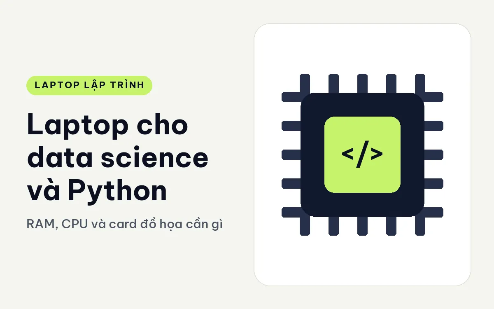
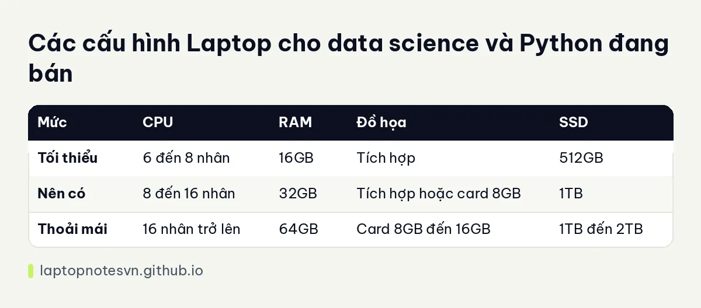

Laptop cho data science và Python - RAM, CPU và card đồ họa cần gì

Data science trên laptop có hai mặt. Mặt thứ nhất là phân tích dữ liệu với pandas, notebook và biểu đồ, việc này ăn RAM nhiều hơn CPU. Mặt thứ hai là huấn luyện mô hình, nơi card đồ họa và VRAM mới là điểm nghẽn. Hiểu bạn đang ở mặt nào sẽ tiết kiệm được rất nhiều tiền khi chọn máy.
Linh kiện nào cần ưu tiên
RAM quyết định kích cỡ bảng dữ liệu bạn mở được. Pandas thường nạp cả bảng vào bộ nhớ, và nhiều thao tác tạo bản sao tạm. Một tệp dữ liệu vài gigabyte có thể chiếm gấp nhiều lần trong RAM. Với đa số công việc, 32GB là mức dễ chịu. Cách tính chung có ở bài lập trình viên cần bao nhiêu RAM.
CPU nhiều nhân giúp các thao tác song song như xử lý dữ liệu, huấn luyện mô hình kiểu cây hoặc chạy nhiều thí nghiệm cùng lúc. 8 nhân là khởi đầu, 16 nhân trở lên khi bạn làm việc thường xuyên với dữ liệu lớn.
Card đồ họa rời và VRAM chỉ quan trọng khi bạn huấn luyện mạng nơ-ron. Khi đó, VRAM giới hạn kích cỡ mô hình và lô dữ liệu. Card 8GB dùng được cho mô hình nhỏ và vừa, 12GB đến 16GB cho nhiều dư địa hơn. Nếu công việc là thống kê và học máy cổ điển, card rời gần như không cần.
SSD chứa dataset. Một ổ 1TB là mức thoải mái, vì dữ liệu mẫu, kết quả trung gian và môi trường ảo tích lại nhanh.
Cấu hình chia theo mức dùng
| Mức | CPU | RAM | Đồ họa | SSD |
|---|---|---|---|---|
| Tối thiểu | 6 đến 8 nhân | 16GB | Tích hợp | 512GB |
| Nên có | 8 đến 16 nhân | 32GB | Tích hợp hoặc card 8GB | 1TB |
| Thoải mái | 16 nhân trở lên | 64GB | Card 8GB đến 16GB | 1TB đến 2TB |
Mức tối thiểu hợp với học tập và phân tích dữ liệu vừa. Mức thoải mái hợp huấn luyện mô hình thường xuyên.

Máy cụ thể nên xem trước
ThinkPad P1 Gen 8 có hai bản. Bản đầu dùng Core Ultra 7 255H 16 nhân, 32GB LPDDR5x 7467MHz, SSD 1TB Gen5, card RTX PRO 2000 8GB. Bản cao dùng Core Ultra 9 285H, 64GB, SSD 2TB và màn OLED. Cả hai có card 8GB, hợp cho mức nên có đến thoải mái.
Dell Pro Max 16 Premium có bản Core Ultra 9 285H, 64GB LPDDR5x, SSD 2TB và card RTX PRO 3000 12GB, màn UHD+ OLED cảm ứng. VRAM 12GB cho dư địa hơn khi huấn luyện mô hình, và 64GB RAM giúp xử lý dữ liệu lớn.
Ghi chú riêng ở Pro Max 16 Premium cho lập trình.
ThinkPad T14 Gen 7 dành cho người làm phân tích thuần, không huấn luyện mô hình: 32GB LPDDR5x, SSD 512GB, chip 8 nhân, đồ họa tích hợp, nặng 1,29 kg. Đủ cho notebook và pandas, nhưng không có card rời.
Khi nào nên đầu tư card đồ họa
Câu hỏi hay gặp nhất là có cần card rời không. Câu trả lời tùy vào việc bạn làm hằng ngày.
Nếu bạn làm phân tích, thống kê, trực quan hóa và học máy cổ điển như hồi quy hay cây quyết định, phần lớn thư viện chạy trên CPU. Card rời gần như không tăng tốc gì ở đây, và tiền bỏ vào RAM sẽ có ích hơn.
Nếu bạn huấn luyện mạng nơ-ron, mọi thứ đổi khác. Card đồ họa và VRAM thành yếu tố then chốt. Mô hình lớn hơn VRAM sẽ không chạy, hoặc phải giảm lô dữ liệu đến mức chậm. Lúc này card 8GB là mức vào cửa, 12GB đến 16GB dễ thở hơn.
Có một nhóm ở giữa: người chủ yếu phân tích nhưng thỉnh thoảng thử mô hình nhỏ để học hoặc làm bản mẫu. Với nhóm này, máy có card 8GB là đủ, còn việc huấn luyện nặng nên đưa lên máy chủ thuê theo giờ.
Cũng cần nhớ rằng card laptop khác card để bàn cùng tên về mức điện năng và hiệu năng kéo dài. Hãy so sánh theo thông số của từng bản máy thay vì chỉ nhìn tên card. Nếu bạn quan tâm máy xách tay mạnh nhưng vẫn mang đi được, đọc ghi chú về ThinkPad P1 Gen 8 cho lập trình.
Kinh nghiệm cài đặt cho data science và Python
Dùng môi trường ảo. Tách môi trường cho từng dự án để tránh xung đột thư viện và để tiết kiệm công sức khi cài lại.
Với card NVIDIA, cài đúng bản driver và thư viện CUDA. Phiên bản các thành phần phải khớp nhau, và sai lệch là nguyên nhân thường gặp của lỗi khó hiểu. Hãy đọc tài liệu của thư viện học máy bạn dùng.
Xử lý dữ liệu theo từng phần. Nếu tệp quá lớn so với RAM, đọc theo khối hoặc dùng định dạng cột nén thay cho CSV thô.
Theo dõi bộ nhớ. Khi notebook chạy lâu, bộ nhớ có thể phình do biến cũ còn giữ. Khởi động lại kernel thỉnh thoảng.
Chú ý nhiệt khi huấn luyện. Huấn luyện kéo dài nhiều giờ tải nặng cho cả CPU và card. Đặt máy trên giá thoáng khí, cắm sạc và đừng để bị che khe gió.
Cân nhắc thuê tính toán đám mây cho việc lớn. Laptop tốt cho phát triển và thử nghiệm; huấn luyện lớn thường rẻ hơn khi thuê máy chủ theo giờ. Đừng mua máy to chỉ vì một vài lần cần sức mạnh.
Tóm lại phần chọn: phân tích dữ liệu thì ưu tiên RAM, huấn luyện mô hình thì ưu tiên VRAM.
Đăng ngày 09/11/2026